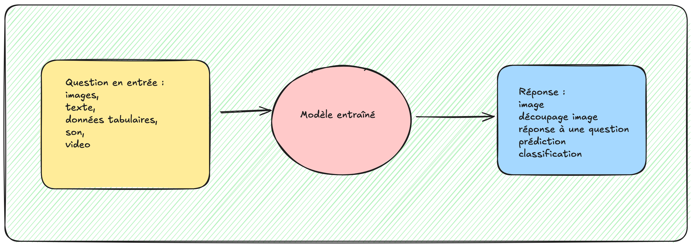
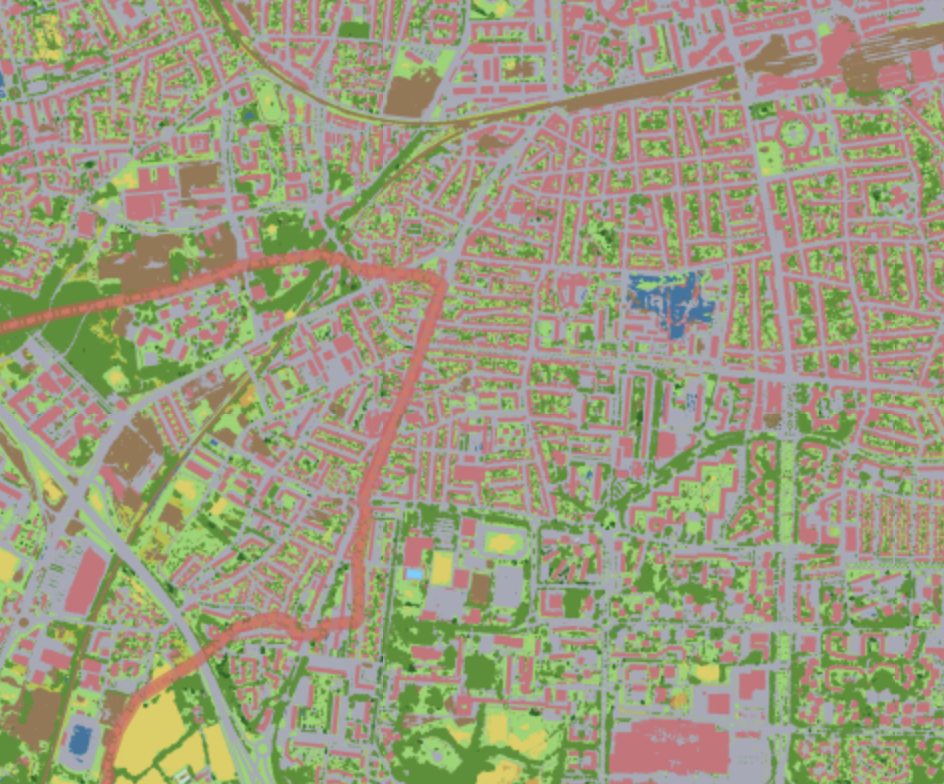
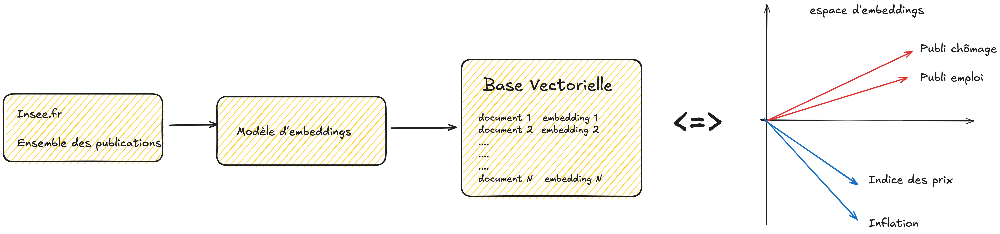
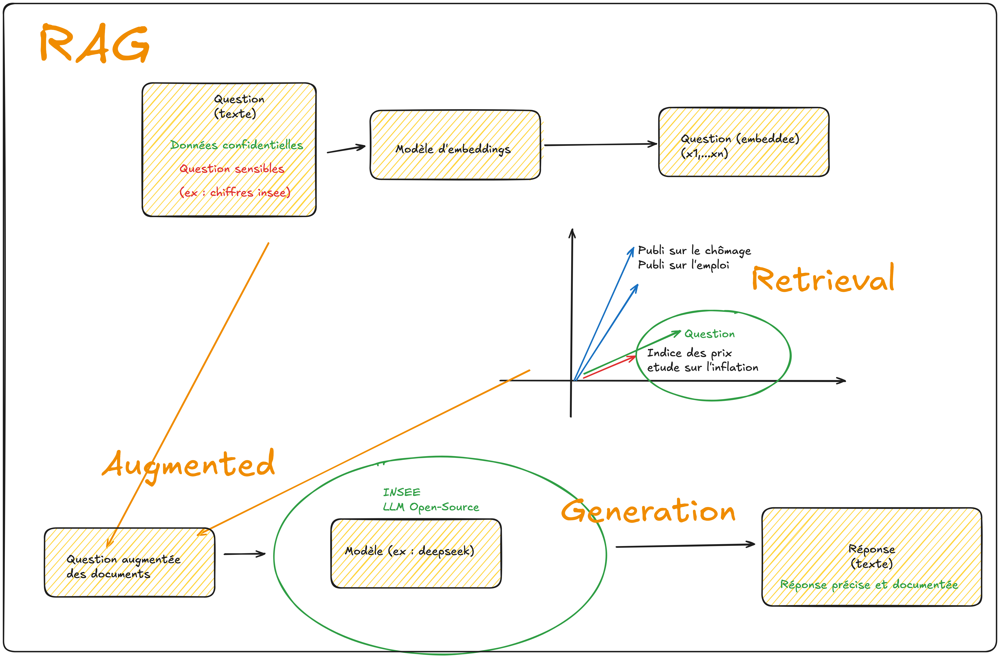
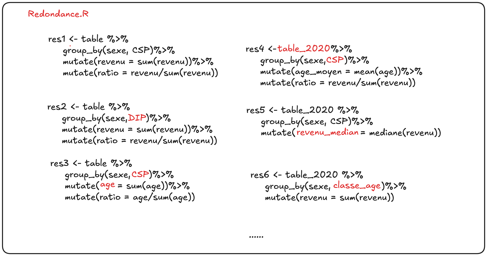

IA et ses usages (potentiels) à l’INSEE
Clément Guillo
26 février 2025
Plan de la présentation
1️⃣ Introduction
2️⃣ Les données spatiales
3️⃣ Les LLMS
4️⃣ Opportunités pour l’INSEE
1️⃣ Introduction
Introduction
- Beaucoup de “hype” autour de l’intelligence artificielle (IA)
- Mot valise dont la définition change selon l’interlocuteur
- Identifier les opportunités pour l’INSEE, et les enjeux associés
Un contour mal défini :
- IA intelligence artificielle, pourrait regrouper :
- l’ensemble des traitements ayant pour but d’automatiser des processus
- des méthodes statistiques plus poussées → économétrie, méthodes d’apprentissage statistique
- Les méthodes d’apprentissage profond → Deep Learning
- Arrivée récente des Large Language Models (LLM) a ouvert l’IA au grand public
Un contour mal défini :
- Où commence la notion d’IA ?
L’apprentissage statistique :
- Pour apprendre il faut des exemples!
- Des images, des textes, des sons, des vidéos, des données structurées, des données non structurées
Objectif de la présentation
- Présenter les travaux techniques menés par le SES
- En différenciant bien l’automatisation, de la partie IA / l’apprentissage statistique
- Présenter des intégrations de l’IA possibles dans les processus de l’INSEE (et donc dans l’ecosystème de l’INSEE)
- Discuter des opportunités pour l’INSEE et ses agents
- Et donner des pistes pour identifier les processus pour lesquels l’automatisation peut s’avérer fructueuse
Plan de la présentation
1️⃣ Introduction
2️⃣ Les données spatiales
3️⃣ Les LLMS
4️⃣ Opportunités pour l’INSEE
L’exemple des plans de collecte
- Simple en apparence, un point sur une carte pour repérer le logement
L’exemple des plans de collecte
- La production des plans repose sur de nombreuses sources de données
Les plans de collecte du RP
- illisible en l’état
Les plans de collecte du RP
Les plans de collecte du RP
- Un plan de collecte par groupe !
Les plans de collecte du RP
Les plans de collecte du RP
Les plans de collecte du RP
Les plans de collecte du RP

Algorithmes de détection du bâti
- Les données satellites sont une source d’image non conventionnelle
- Méritent d’etre analysées pour aider au Recensement de la Population
- Tempête Chido à Mayotte, critiques des élus en Guyane
Les images
 |
|---|
- Différentes résolutions, spatiales spectrales et temporelles
- Lien vers les images
Méthode d’entraînement

Quelles données en entrée ?
|  |
|---|
- Pour entraîner le modèle, il nous faut des images et des annotations associées
- Le projet Cosia nous donne ces annotations pour une année donnée
Quelques liens
Ce qu’il reste à faire
- pérenniser le processus d’obtention des images (geoserveur) pour pérenniser les outils
- gérer la transition RIL / Base adresse nationale
- travaux de qualité sur la source fiscale (Résil DROM)
- se mettre à jour ! : de nouveaux modèles émanent de la littérature très fréquemment
L’IA dans tout ça ? :
- La méthode de Zoom des plans de collecte est de l’ordre de l’automatisation, mais utilise une méthode des k plus proches voisins pour regrouper les points qui sont proches
- Les algorithmes de Segmentation utilisés ici sont appelés des “SegFormer” et fond partis des “Vision Models” → Structure très proche des transformers
Plan de la présentation
1️⃣ Introduction
2️⃣ Les données spatiales
3️⃣ Les LLMS
4️⃣ Opportunités pour l’INSEE
Une brève explication
- LLM = Large Language Model
- Capable de prédire le mot suivant dans une phrase (à partir d’une contexte)
- Entrainé à converser avec l’utilisateur
- Données d’entrainement : une énorme quantité de pages de textes
LLM et confidentialité
- le modèle final est de taille conséquente : peut aller jusqu’à plusieurs centaines de Gigas (un film de bonne qualité 3 Gigas)
- Mais est capable de recracher une quantité d’information beaucoup plus grande !
- Idée de compression de l’information, bien que la restitution soit particulière
LLM et confidentialité
- Attention à la confidentialité des données !
LLM et confidentialité
- les LLMS peuvent être hébergés localement mais nécessitent de l’espace et de la puissance de calcul
- Démonstration d’Ollama sur le datalab ?
- Package R ollamax : https://github.com/clement2323/ollamax
Notion d’embeddings:
- La proximité dans l’espace est une proximité sémantique !
Base vectorielle:
- On transforme le site de l’insee en une base vectorielle
- Revient à associer une position dans l’espace à chaque page du site
RAG :
- Retrieval Augmented Generation 
Les besoins pour un RAG :
- Le plus difficile est de récupérer les données dans un format structuré
- Exemple du site de l’insee.fr : comment récupérer l’entiereté des publications ?
Un exemple de RAG particulier (BoutadE):
- Constat : beaucoup de redondance dans les codes de production de tableaux et graphiques
Un exemple de RAG particulier (BoutadE):
- Hautement automatisable !
Un exemple de RAG particulier (BoutadE):
un tableau ou graphique est basé sur des éléments simples:
- un titre
- une table de départ
- des variables de croisement (sexe, CSP..)
- des variables quantitatives (Revenu, nb enfants)
- une fonction agregeante (somme, moyenne..)
idée : créer une machine qui prend en entrée les éléments mentionnés et qui renvoie la table ou le graphique associé
on remplace toutes les lignes de code par l’appel d’une seule fonction !
Les métadonnées :
En ajoutant du contexte aux tableaux et en envoyant le tout à un LLM (en soignant le prompt), on construit un RAG artisanal permettant d’analyser les données
éléments de contexte :
- dictionnaire des variables
- objectifs de l’étude, voire messages pressentis
- public cible
Les métadonnées :
La naissance de BoutaDE
- De l’importance de savoir où on va avant de se lancer !
Autres cas d’usages potentiels :
- Gonfler les publications du site de l’INSEE avec des notices sur la méthodologie et les missions de l’INSEE
- Produire un RAG sur les documents administratifs de l’INSEE
Les modèles de visions :
- Exemple récents de reconnaissance de texte sur des scans de fiche adresse RP
- Les modèles de vision, sont devenus très performants !
- Voir sur Mistral Chat
- Démonstration : rapport écrit à partir de schémas excalidraw..
Les grosses boîtes :
- Open AI et chat GPT
- depSeek (concurrent chinois) -> Open source
- Anthropic
- Meta
- Mistral
- X
Les différents modèles :
- chatGPT
- claude
- gemini
- llama
- mistral
Plan de la présentation
1️⃣ Introduction
2️⃣ Les données spatiales
3️⃣ Les LLMS
4️⃣ Opportunités pour l’INSEE
Que retenir de tout ça ?
- Il y a des opportunités pour l’INSEE et ses agents dans toutes les sphères !
- usages possibles :
- automatisation des tâches redondantes
- production facilitée de documentation
- chats spécialisés dans un domaine (RAG)
- aide précieuse en programmation (cursor démonstration (elo)+ documentation via github)
- glissements des agents converationnels vers les agents réalisant des actions ! (bolt.new)
La contrepartie
- Formations nécessaires sur l’usage de ces outils
- redéfinition possible de certains rôles :
- l’exemple de sirene : + classification automatique des APE
- données satellites + enquete cartographique
- Nécessite une mise à jour assez fréquente
Attention aux données !:
- Avec de mauvaises données on aura toujours de mauvais résultats !
- mauvaises images → mauvaises prédictions
- mauvais corpus de texte → mauvais agents conversationnels
Attention à l’organisation
- L’automatisation demande de la rigueur ! :
- stabilité dans les formats de données
- Mise à jour intelligente des sources de données
- parcimonie dans les programmes
- Documentation des programmes
- nécessite une vraie culture de la donnée !
- notions de bonnes pratiques : Git/Gitlab, integration continue
L’écosystème INSEE
- Ces outils sont-ils disponibles à l’INSEE ?
- Listes des ressources :
- datalab
- AUS
- LS3
L’intégration continue, un pas vers la rigueur
- Git/ Gitlab : permet la relecture des programmes autant que celle de l’étude dans un même cadre !
- l’integration continue permet d’actualiser l’output finale sans jamais séparer les codes des chiffres !